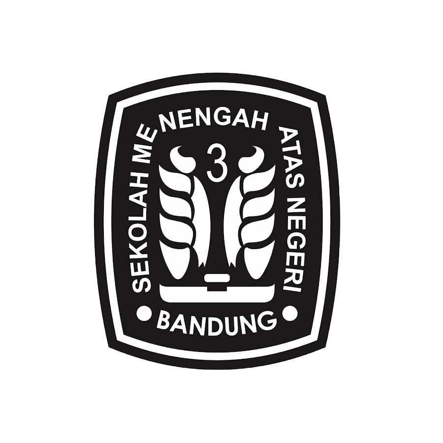

Buku: Sebagai tanda keilmuan
Wadah: Sebagai tempat sarana menggali ilmu
Sayap Sebelah Kanan: Menandakan keberadaan laki-laki di SMAN 3 Bandung
Sayap Sebelah Kiri: Menandakan keberadaan perempuan di SMAN 3 Bandung
Lima Helai Sayap: Menandakan Pancasila yang menjiwai SMAN 3 Bandung
Dua Buah Titik Angka 3: Melambangkan proses belajar mengajar
Angka 3: Melambangkan 3 sisi
Logo SMA 3 yang Mengelilingi Seluruh unsur: Mengutamakan kebersamaan Mengelilingi semua unsur Melambangkan persatuan